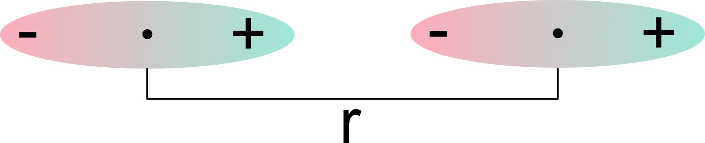
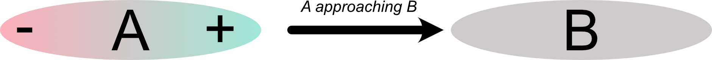
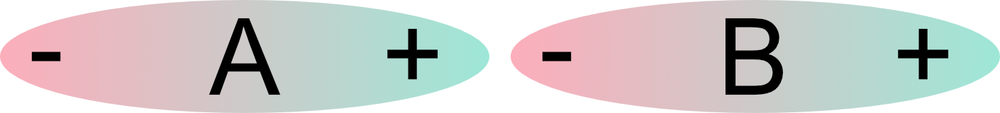
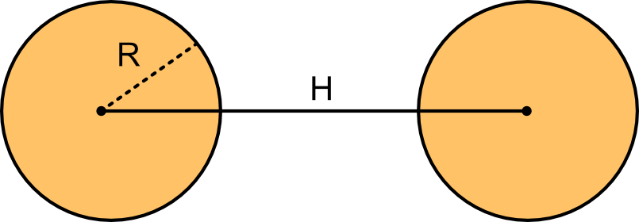
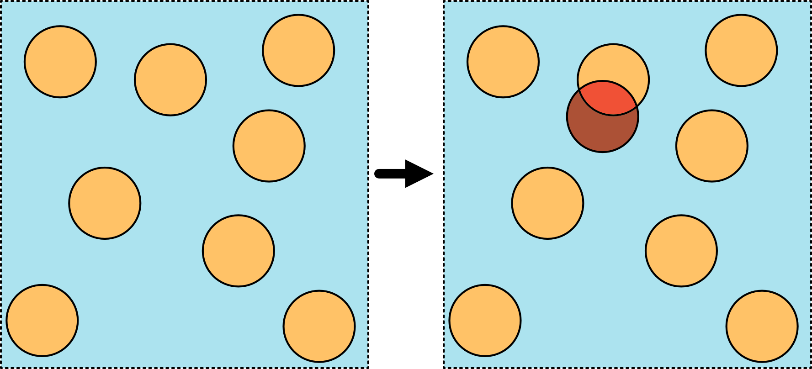
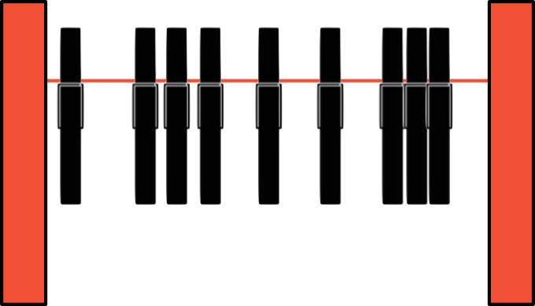
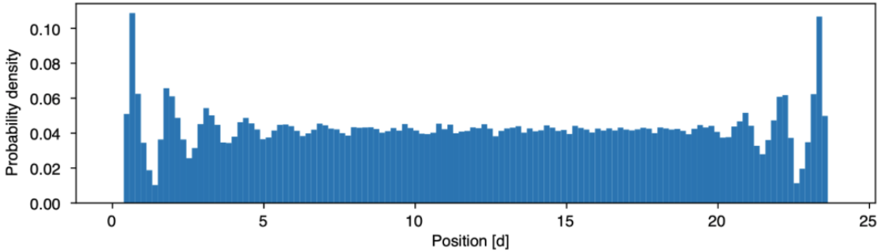
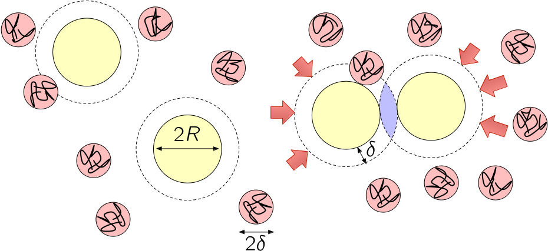

Complex Disordered Systems
Interactions between colloids
Francesco Turci
Today
- Colloid-colloid interactions
- van der Waals interactions
- double layer interactions
- Entropic interactions: the Asakura-Oosawa model of depletion
Interactions between colloids
We distinguished between fundamental and effective forces between colloids
- Fundamental forces:
- gravity
- electro (magneto) static forces
- Effective forces
- Van der Waals forces
- electrostatic repulsion (DLVO)
- depletion forces
- hydrophobic/hydrophilic interactions
- steric forces
- Effective interactions emerge from the fundamental ones and structure our description at the colloidal scale.
- Fluctuations of fundamental forces are often at the origin of the effective forces.
- We focus on effective interactions (revise your electrostatics if needed)
van der Waals interactions
IUPAC definition:
The attractive or repulsive forces between molecular entities (or between groups within the same molecular entity) other than those due to bond formation or to the electrostatic interaction of ions or of ionic groups with one another or with neutral molecules. The term includes:
- dipole–dipole
- dipole-induced dipole
- London (instantaneous, spontaneous dipole-induced dipole) forces.
The term is sometimes used loosely for the totality of nonspecific attractive or repulsive intermolecular forces.
Reminder: Multipole expansion
The electrostatic potential of a charge distribution can be expanded as:
V(\mathbf{r})=\frac{1}{4 \pi \epsilon_0} \sum_{l=0}^{\infty} \sum_{m=-l}^l \frac{4 \pi}{2 l+1} \frac{Q_{l m}}{r^{l+1}} Y_l^m(\theta, \phi)
where Y_l^m(\theta, \phi) are spherical harmonics and Q_{l m}=\int r^{\prime l} Y_l^{m *}\left(\theta^{\prime}, \phi^{\prime}\right) \rho\left(\mathbf{r}^{\prime}\right) d^3 r^{\prime}:
- Q_{00} = Q (monopole - total charge)
- Q_{1m} terms give the dipole moment \mathbf{p}
- Q_{2m} terms give the quadrupole moment
- Higher terms: octupole, hexadecapole, etc.
For large distances (r \gg molecular size), the potential is dominated by the lowest non-zero multipole moment.
No need to memorise this.
van der Waals interactions: dipole-dipole
We are focusing on atoms that are globally neutral. The first non-trivial term is the dipole.
Static dipoles are asymmetric distributions of charge stationary in time

The interaction energy between two dipoles \mu_1 and \mu_2 separated by a distance r is proportional to:
U(r) \propto-\frac{\mu_1 \mu_2}{r^3}
van der Waals interactions: dipole-induced dipole
A permanent dipole can induce a temporary dipole in a nearby neutral atom. The induced dipole then interacts with the permanent dipole.


The induced dipole itself is proportional to the electric field of the incoming dipole, and it is \mu_B \propto \mu_A E_A \propto \dfrac{\mu}{r^3}.
Then the interaction energy is just
U(r) \propto -\frac{\mu^2 \alpha}{r^6}
where \alpha is the polarizability of the neutral atom.
Induced dipole-induced dipole interactions
Orbitals provide the average expected electron density at every point in space, \langle\rho(\mathbf{r})\rangle=|\psi(\mathbf{r})|^2
Instantaneous fluctuations from the mean occur in time and depend on density-density correlations. The variance is non-uniform .
This means that even when the density is neutral, on short timescales (femtoseconds, electronic transition times) the density distributions can be thought of as asymmetric.
These quantum-mechanical fluctuations again produce interactions known as London dispersion forces
London dispersion interaction
\Large U(r)=-\frac{C}{r^6}
The key insight is the 1/r^{6} decay of the interaction which decays much more rapidly than Coulomb’s 1/r.
They are short-range in 3D, since the total energy scales like \sim \int V(r) r^{d-1} d r and 6>3
van der Waals attractive interaction between spheres
Take now two spherical colloids of radius R at distance H.
Integrating the London interaction over all volume elements yields the van der Waals attractive potential

Colloid-colloid van der Waals attractive interaction
\Large W_{w d W}(h)=-\frac{A_H}{g} f(h / R)
where A_H is the Hamaker constant and f(h / R)=\left[\frac{2 R^2}{h^2-4 R^2}+\frac{2 R^2}{h^2}+\ln \left(\frac{h^2-4 R^2}{h^2}\right)\right].
van der Waals attractive interaction between spheres
Double-layer interaction: structure
Colloids are often charged. In the solution there will be
- co-ions (same charge as the colloid) that will be pushed away from the colloid surface, while
- counter-ions (opposite charge) will accumulate at the surface.
A double layer forms due to the accumulation of counter-ions near the colloid surface, and repulsion of co-ions.
Its width depends on the ion concentration in the solvent, which can be adjusted by adding or removing salts.

Double-layer interaction: nonlinear Poisson-Bolztmann equation
When two colloids come close, the charges in their double layers will interact, giving rise to a repulsive interaction. This is not simply a Coulombic interaction, as it is mediated by the other (opposite) charges in the medium.
This means in practice taking Poisson’s equation
\nabla^2 \psi(\mathbf{r})=-\frac{\rho_{\mathrm{tot}}(\mathbf{r})}{\varepsilon}= -\frac{\rho_{\mathrm{fixed}}(\mathbf{r})+\sum_i \rho_{\mathrm{ions},i}(\mathbf{r})}{\varepsilon}
and making the ion concentration depend on the electrostatic potential \psi(\mathbf{r}) itself via a Boltzmann weight
\rho_{\mathrm{ions},i}(\mathbf{r})= z_i e n_{s,i} \exp \left(-\frac{z_i e \psi}{k_B T}\right)
with n_{s,i} the far-away (bulk) concentration of ions of species i and z_i e the ion charge.
This yields the nonlinear Poisson-Bolztmann equation
\nabla^2 \psi(\mathbf{r})=-\frac{1}{\varepsilon}\left[\rho_{\text {fixed }}+ \sum_i z_i e n_{s,i} \exp \left(-\frac{z_i e \psi}{k_B T}\right)\right] .
No need to memorise this.
Double-layer interaction: screened repulsion
Linearisation around room temperature (e\psi\ll k_BT) yields the Debye–Hückel equation
\nabla^2 \psi= \psi/\lambda_D^2
where \lambda_D is the Debye length
\lambda_D=\sqrt{\frac{1}{8 \pi \lambda_B n_s}} itself dependent on the Bjerrum length \lambda_B: the scale at which two elementary charges have energy k_B T.
The final form of the potential is an exponential repulsion with scale \lambda_D
Important
\Large W_{D R}(h)=B \frac{R}{\lambda_B} \exp \left(-h / \lambda_D\right)
vdW + double layer = DLVO interaction
To sum up, identical colloids in solution have two interactions of opposite sign
a van der Waals component, typically attractive
a double layer component repulsive in nature
The sum of the two gives rise to the DLVO (Derjaguin–Landau–Verwey–Overbeek) interaction which is an elementary model for colloid stability and aggregation.
Excluded volume and generic atomistic interactions
- At very short distances the electronic clouds overlap.
- Electrons cannot share the same quantum state and must occupy different, higher energy states
→ Large energy costs in approaching atoms: steric repulsive interactions below a van der Waals radius.
A phenomenological model for a generic atomistic interaction potential is then
V_{\mathrm{LJ}}(r)=\dfrac{A_n}{r^n} - \dfrac{B_m}{r^m}
where the first term is the short-range repulsion and the second a generalised attraction.
A convenient choice is the Lennard-Jones potential of scale \sigma (twice the van der Waals radius)
V_{\mathrm{LJ}}(r)=4 \varepsilon\left[\left(\dfrac{\sigma}{r}\right)^{12}-\left(\dfrac{\sigma}{r}\right)^6\right],
where m=6 is chosen to match London’s forces and n=12 is chosen to match experiments and computational convenience.
Atomistic, but at the heart of numerous coarse-grained models.
Exclusion and entropic forces
Steric repulsion (hindrance) means excluded volume: at thermal energy scales, an atom cannot be placed at the position of another atom.
Geometrical point of view:
Excluded volume means that, neglecting attractions, atoms/molecules/macromolecules/colloids are spheres that cannot overlap.
Distribute spheres in space:
- volume exclusion means that some configurations are forbidden

Exclusion in one dimension
Exclusion means forbidden configurations.
Statistical mechanics approach: simplest system with the required ingredients, studied in detail.
- Hard identical particles on a line between two repulsive, impenetrable walls.
Macroscopic analogue:
Clothpins on a line
Exclusion in one dimension
Investigate the probability distribution \rho(x) of finding the centre of a particle at position x. Parameters:
- clothpin horizontal size d (only size that matters)
- length of the line L
- number of clothpins N
We can treat the problem algorithmically
Algorithm
- position the particles in a valid configuration (no overlaps with other particles or the walls)
- pick a particle at random
- move it slightly along the line
- test if the new position is valid (no overlaps)
- if valid, accept the move; otherwise, reject
- go back to (2)
Simulation of hard clothpins on a line
Simulation of hard clothpins on a line
The key parameter is the packing fraction \phi = \dfrac{dN}{L} (non-dimensional)1.
- low \phi: almost uniform profile
- intermediate \phi: small peaks start to show close to the walls
- high \phi: strong peaks and modulation of the density along the line

Attraction via repulsion
What do the peaks mean? It means that it is more likely to find the particles close to the walls:
- the walls seem to attract the particles
- peaks and valleys indicating layering
- the interaction with the wall vanishes as we get away from it
The source of this effect is entropy:
- if the first and last particles stay close to the walls, the other particles have more available space in the middle
- this means that there are more configurations available for the rest of the particles if the extreme particles are getting more localised
- more configurations → larger entropy → lower free energy = depletion
F=U - TS=\cancel{U} - TS
No internal energy, only entropy, so temperature is only a scale parameter.
Asakura-Oosawa depletion potential
More realism: Mixture of colloids (yellow) and polymers (squiggly lines inside red circles). The depletion layers are as thick as the polymer radius (red circles) and are indicated with the dashes around the colloids. When the two layers do not overlap, the osmotic pressure due to the polymers on the colloids is balanced. When there is overlap, there is a region inaccessible to the polymers (purple) and the pressure is unbalanced, leading to aggregation.
Asakura-Oosawa depletion potential
Depletion forces play a pivotal role in colloidal aggregation.
The basic mechanisms are the same as in our 1D example.
We are going to work through the details of a particular model
- Asakura-Oosawa depletion interaction
Asakura-Oosawa model
- Colloids: Large spheres, diameter 2R, impenetrable (hard spheres)
- Polymeric bundles: Smaller spheres, diameter \sigma_p = 2\delta.
- cannot overlap with colloids
- can overlap with other (penetrable hard spheres)
- System is at thermodynamic equilibrium:
- same pressure, temperature and chemical potential throughout
- can think of the system as chemostatted by a polymer reservoir at the same \mu_{polymer}
- The polymers (by themselves) are ideal so their chemical potential is \mu_p = k_BT \ln \rho_p^r
- The number density is linked to the packing fraction \phi_p^r=\rho_p v_p = \frac{\pi}{6} \rho_p^r \sigma_p^3
- we work at constant V,T,\mu: grand canonical ensemble
- We ignore all internal structure of the polymers.
Sketch of derivation of AO potential
In the absence of colloids, the entire volume V is accessible to the polymer V_{\rm accessible} = V
Grand potential of the polymers \Omega = -k_BT e^{\mu_p/k_B T}V_{\rm accessible}
Introduce one colloid: the polymers cannot get closer than the distance R+\delta

Excluded volume around one polymer
- Excluded volume V_{\rm exclusion} = V_{\rm outer}-V_{\rm inner}= \dfrac{4\pi}{3}\left((R+\delta)^3-R^3\right)
- The accessible volume is now V_{\rm accessible} = V-V_{\rm exclusion}
Sketch of derivation of AO potential
Introduce a second colloid at distance r from the first colloid.
The accessible volume is V_{\rm accessible}^{\infty}=V-2V_{\rm exclusion}
Two situations:
- \forall r >R_d = 2R+2\delta the accessible volume remains the same, constant \Omega(r)=\Omega_{\infty}
- For 2R<r<R_d the accessible volume changes: overlap between exclusion volumes.
A second colloid is introduced at a short distance r. The exclusion regions overlap (light blue), increasing the accessible volume.
Sketch of derivation of AO potential
- The overlap region can be calculated from standard geometrical properties of spherical caps
V_{\mathrm{overlap}}(r)=\dfrac{4 \pi}{3} R_d^3\left[1-\frac{3}{4} \frac{r}{R_d}+\frac{1}{16}\left(\frac{r}{R_d}\right)^3\right]
- The new accessible volume is
V_{\rm accessible}^\prime=V-(2V_{\rm exclusion}-V_{\mathrm{overlap}})
- Since \Omega = -k_BT e^{\mu_p/k_B T}V_{\rm accessible} the grand potential becomes more negative when the colloids are close.
Sketch of derivation of AO potential
- Free energy advantage from the overlapping excluded volumes
\begin{aligned} W_{\rm AO}(r) = \Omega(r)-\Omega^{\infty} & =-k_BT e^{\mu/k_B T}\left(V_{\rm accessible}(r)-V_{\rm accessible}(\infty)\right)\\ & = -k_BT e^{\mu/k_B T}\left[V-2V_{\rm exclusion}+V_{\mathrm{overlap}}(r)-(V-2V_{\rm exclusion})\right]\\ & = -k_BT e^{\mu/k_B T} V_{\mathrm{overlap}(r)}\\ & = -k_B T \rho_p V_{\mathrm{overlap}(r)} \end{aligned}
The result is an attractive depletion potential controlled by the geometry of the overlap
Asakura-Oosawa potential (1954)
\Large W_{\rm AO} (r) = - \dfrac{4 \pi \rho_p^r k_B T}{3} (R+\delta)^3\left[1-\dfrac{3}{4} \dfrac{r}{R+\delta}+\frac{1}{16}\left(\dfrac{r}{R+\delta}\right)^3\right] \quad 2R\leq r< 2R+\delta
AO potential
Summary of main colloid-colloid interactions
| Interaction Type | Description | Range |
|---|---|---|
| Van der Waals | Attractive forces arising from induced dipoles between particles. | Short-range |
| Double Layer | Electrostatic repulsion due to overlapping electrical double layers around charged particles. | Long-range |
| DLVO | Combination of van der Waals attraction and double layer repulsion. | Short and long range |
| Depletion | Typically attractive interactions emerging from purely entropic interactions | Short range |